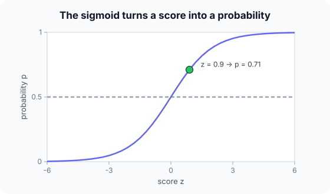

Prerequisites
- Linear regression.
- The exponential function $e^x$ and natural log.
- Classification.
The analogy
Everyday analogy
Think of a judge adding up evidence: some facts point towards "guilty" (positive weights), others away (negative weights). The total can be any number.
The sigmoid turns that total into a confidence between 0 and 1: lots of evidence for gives nearly 1, lots against nearly 0, and a balanced case 0.5.
How it works
Model: $z = w^\top x + b$, then $p = \sigma(z) = 1/(1 + e^{-z})$ is the probability of class 1. Predict 1 when $p \ge 0.5$, i.e. when $z \ge 0$.
Start with one prediction by hand
Input $x = [2, 1]$, weights $w = [0.5, -0.2]$, bias $b = 0.1$. Predict, then open "Check".
Example: predict before you read
Step 1. Compute the linear score $z = w \cdot x + b$.
Check
$0.5 \cdot 2 + (-0.2) \cdot 1 + 0.1 = 1 - 0.2 + 0.1 = 0.9$.
Step 2. Cover the next line and guess: $\sigma(0.9) = 1/(1 + e^{-0.9})$, with $e^{-0.9} \approx 0.407$.
Check
$1/1.407 \approx 0.711$.
Step 3. Which class is predicted, and what is the log loss if the true label is 1?
Check
Class 1 (0.711 ≥ 0.5). Loss $= -\ln 0.711 \approx 0.34$.

Quick recall: Before reading further, cover the text above and say out loud: what does the sigmoid output when $z = 0$?
Check your answer
0.5: the decision boundary, where the model is undecided.
Finish the picture: loss and the boundary
Same input and weights, $p = 0.711$.
- True label 0. Predict the log loss.
Check
$-\ln(1 - 0.711) = -\ln 0.289 \approx 1.24$: much larger, because the model was fairly confident and wrong.
- Decision boundary. Predict the set of inputs where $p = 0.5$.
Check
Where $0.5 x_1 - 0.2 x_2 + 0.1 = 0$: a straight line in the $(x_1, x_2)$ plane. Logistic regression is a linear classifier.
Quick recall: Without scrolling up, say out loud: why is the loss so much larger when the true label is 0?
Check your answer
The model put only 29% on class 0, and the log loss $-\ln 0.289 \approx 1.24$ punishes confident wrong answers heavily.
Full worked calculation
A full training step: predict, measure the loss, compute the gradient, update the weights, and check that the loss went down. Example: $x = [2, 1]$, true label $y = 1$, weights $w = [0.5, -0.2]$, bias $b = 0.1$, learning rate $\eta = 0.5$.
-
1Linear score
$$z = w_1 x_1 + w_2 x_2 + b = 0.5 \cdot 2 + (-0.2) \cdot 1 + 0.1 = 0.9$$Each feature pushes the score up or down according to its weight. Feature 1 pushes up by 1.0, feature 2 down by 0.2, and the bias adds 0.1.
-
2Probability with the sigmoid
$$p = \sigma(0.9) = \frac{1}{1 + e^{-0.9}} = \frac{1}{1 + 0.4066} \approx 0.7109$$The sigmoid squashes any score into (0, 1). A score of 0.9 becomes a 71% belief that the email is spam (class 1).
-
3Loss (log loss)
$$L = -\ln p = -\ln 0.7109 \approx 0.3412$$Because the true label is 1, the loss is minus the log of the probability given to class 1. It would be 0 if $p$ were 1, and it grows quickly as $p$ approaches 0.
-
4Gradient of the loss
$$\frac{\partial L}{\partial z} = p - y = 0.7109 - 1 = -0.2891, \qquad \frac{\partial L}{\partial w} = (p - y)\,x = [-0.5781,\; -0.2891], \qquad \frac{\partial L}{\partial b} = -0.2891$$For sigmoid plus log loss the error signal is simply "prediction minus truth". Each weight's gradient is that signal times its own input, so the feature with the bigger value (2) gets twice the blame.
-
5Update the parameters
$$w \leftarrow w - \eta \nabla_w L = [0.5 + 0.289,\; -0.2 + 0.145] = [0.7891,\; -0.0555], \qquad b \leftarrow 0.1 + 0.145 = 0.2445$$The gradients are negative, so subtracting them increases the parameters, which raises the score for this positive example. The learning rate 0.5 sets how big that move is.
-
6Check: predict again
$$z' = 0.7891 \cdot 2 - 0.0555 \cdot 1 + 0.2445 = 1.7672, \qquad p' = \sigma(1.7672) \approx 0.8541, \qquad L' = -\ln 0.8541 \approx 0.1577$$One step raised the probability of the correct class from 0.71 to 0.85 and more than halved the loss (0.341 → 0.158). Training repeats this over many examples until the loss stops improving.
What the numbers tell us
Training logistic regression is a loop of four lines: score, sigmoid, error $p - y$, update $w \leftarrow w - \eta (p - y) x$.
The update moves weights in proportion to both the error and the input value, so features that were large for a misclassified example change the most.
The rule in plain words
Compute $z = w^\top x + b$ and $p = \sigma(z)$. Predict class 1 if $p \ge 0.5$ (or another threshold chosen for precision/recall).
Train by minimising the log loss (cross-entropy) with gradient descent; its gradient per example is simply $(p - y)\,x$.
Quick recall: Before you read the code, describe how to compute a prediction, in your own words. Then check below.
Check your answer
Multiply each feature by its weight, add them up with the bias, and pass the total through $1/(1 + e^{-z})$.
The code
Read this code after you have computed the prediction by hand. It will make more sense.
double sigmoid(double z) { return 1 / (1 + exp(-z)); }
double predict_proba(double w[], double b, double x[], int d) { /* P(class 1 | x) */
double z = b;
for (int j = 0; j < d; j++) z += w[j] * x[j]; /* linear score */
return sigmoid(z); /* squash to (0, 1) */
}
double log_loss(double p, int y) { return y ? -log(p) : -log(1 - p); }Definition
What you just did, in one line: logistic regression predicts the probability of the positive class as $\sigma(w^\top x + b)$, trained by minimising the log loss.
flowchart LR
X["x = [2, 1]"] --> Z["z = w·x + b = 0.9"]
Z --> S["p = sigmoid(z) = 0.71"]
S --> D{"p >= 0.5 ?"}
D -->|yes| C1["predict class 1"]
D -->|no| C0["predict class 0"]
How costly is it?
Quick recall: Before looking at the formula, predict: what loss does a perfect prediction ($p = 1$ for a true 1) get?
Check your answer
0, because $-\ln 1 = 0$.
Training minimises the average log loss (binary cross-entropy):
$$J(w, b) = -\frac{1}{n}\sum_{i=1}^{n} \Big[y_i \ln p_i + (1 - y_i)\ln(1 - p_i)\Big], \qquad \frac{\partial J}{\partial w} = \frac{1}{n}\sum_i (p_i - y_i)\,x_i$$| Phase | Cost | Why |
|---|---|---|
| Training, per gradient-descent epoch | $O(nd)$ | One prediction and gradient per example |
| Prediction | $O(d)$ | One dot product and a sigmoid |
| Memory | $O(d)$ | Just the weights |
Best for: binary classification with roughly linear boundaries, when you need probabilities and interpretable weights.
- Pro: Outputs well-calibrated probabilities.
- Pro: Fast, simple, interpretable (log-odds per feature).
- Con: Linear decision boundary only, unless you engineer features.
- Con: Struggles with strongly correlated or unscaled features without regularization.
Warning
Despite its name, logistic regression is a classification method. It predicts a probability, then a class; it does not predict a continuous target.
Exam tip
Show the two steps explicitly: linear score $z$, then sigmoid. Exams often give $w$, $b$, $x$ and ask for $p$ and the predicted class; $z \ge 0$ is the quick check for class 1.
Common mistakes
- Forgetting the bias $b$ in the score.
- Using MSE instead of log loss to train, which makes optimisation harder.
- Calling it a regression model because of its name.
Try it yourself
Exercise 1 (warm-up)
$w = [1, 1]$, $b = -3$, $x = [1, 1]$. Compute $z$, $p$ and the predicted class.
Hint
$e^{1} \approx 2.718$.
Answer
$z = -1$, $p = 1/(1 + e^{1}) \approx 0.269$, class 0.
Exercise 2 (a bit harder)
With $w = [0.5, -0.2]$, $b = 0.1$, find the value of $x_1$ (with $x_2 = 1$) where the model is exactly 50/50. Write your answer down before you open it.
Show answer
Set $z = 0$: $0.5 x_1 - 0.2 + 0.1 = 0$, so $x_1 = 0.2$. Above it the model predicts class 1, below it class 0.
Did you know?
Did you know?
The logistic function was introduced by Pierre-François Verhulst in the 1840s to model population growth that levels off.
A neural network for binary classification ends with exactly this: a linear layer followed by a sigmoid, trained with the same log loss.
Key points to remember
If you remember one thing from each line, remember the because.
- The output is a probability because the sigmoid maps any score into (0, 1).
- The boundary is linear because $p = 0.5$ exactly when $w^\top x + b = 0$.
- Log loss punishes confident mistakes because $-\ln p$ grows without limit as $p \to 0$.
- Training is easy because the log loss is convex, with a simple gradient $(p - y)x$.
- It is a classifier because the probability is turned into a class with a threshold.
Self-check questions
Answer these in order, out loud. They follow the page, so your answers become the script of your video.
- How is logistic regression like a judge weighing evidence?
Sample answer
Facts add or subtract from a total score, and the sigmoid turns that total into a confidence between 0 and 1.
- Compute the prediction for $x = [2, 1]$, $w = [0.5, -0.2]$, $b = 0.1$.
Sample answer
$z = 0.9$, $p = \sigma(0.9) \approx 0.71$, so class 1.
- Why does
log_lossuse $-\ln(1 - p)$ when $y = 0$?A good answer says what probability the true class got.
Sample answer
For a true 0, the probability the model gave to the correct class is $1 - p$; the loss is minus its log, small when that probability is high.
- So what is logistic regression, in one sentence?
Sample answer
A linear classifier that turns a weighted sum of features into a probability with the sigmoid, trained with log loss.
- Why is the decision boundary of logistic regression a straight line (or plane)?
A good answer starts from $p = 0.5$.
Sample answer
$p = 0.5$ exactly when $z = w^\top x + b = 0$, which is a linear equation in $x$.
- What do training and prediction cost?
Sample answer
$O(nd)$ per gradient-descent epoch; $O(d)$ per prediction.
- Give two pros and two cons.
Sample answer
Pros: calibrated probabilities, fast and interpretable. Cons: only linear boundaries, and needs scaling or regularization with correlated features.
- If you had to teach this to a friend in 2 minutes, what would you leave out, and why?
Sample answer
I'd leave out the gradient formula and the loss derivation. I'd keep the judge analogy, the $z = 0.9 \to 0.71$ example, and "linear score, sigmoid, threshold at 0.5".
External resources
- scikit-learn: Logistic regression: the model, solvers and regularization.
- Google ML Crash Course: Logistic regression: sigmoid and log loss explained.
- Wikipedia: Logistic regression: theory and interpretation of weights.
Videos
- YouTube search: StatQuest logistic regression: StatQuest's series on logistic regression.